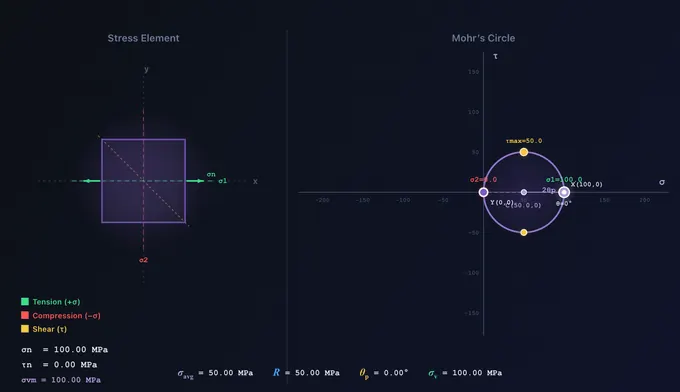
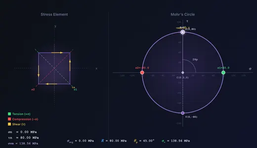

Mohr's Circle Calculator
Principal Stresses • Max Shear • Stress Transformation • Rotation — Simulate • Explore • Practice • Quiz
Display Controls
Σ Live equations — values substituted from current state
💡 What-if coach — insights from current values
⚠ Failure theories — Tresca, Von Mises, Rankine
1 Overview
The Mohr’s Circle Simulator is an interactive visualisation tool for 2D plane stress analysis. Define a stress state (σx, σy, τxy) using sliders, number steppers, or by dragging Point X directly on the σ–τ plane. See the corresponding Mohr’s Circle, stress element, principal stresses, max shear, principal angle θp, Von Mises equivalent stress, and the transformed stresses at any angle θ — updated live.
The SI / Imperial switch beside the presets reads the whole stress state in ksi instead of MPa — the unit US texts state plane-stress problems in. The stress inputs, all seven stress readouts, the on-diagram point annotations (C, X, Y, σ1, σ2, τmax), the σ-axis label and its grid ticks all follow, and the ticks are re-chosen so they land on round ksi values rather than converted MPa ones. Angles (θ, θp) are the same in both systems. Explore concepts and Practice problems stay in MPa because they are fixed textbook statements.
A 2:1 angular relationship is the key insight: a rotation of θ on the physical element corresponds to 2θ on the circle. Press Play to auto-animate θ from 0° to 180° and watch the stress element rotate while the point traces a full lap around the circle.
2 Interactive Features
- Drag Point X on the σ–τ plane to set σx and τxy directly. Point Y mirrors automatically.
- Drag the θ rotation point around the circle to set the element angle in real time.
- Play / Pause button auto-animates θ; adjust the speed slider 0.2×–2.0×.
- Number steppers next to each slider allow precision entry. + Custom opens a modal to enter values beyond the slider range.
- Right-click the canvas for a context menu: Copy values, Export CSV/PNG, Toggle grid, Reset.
- Keyboard: Arrow keys nudge θ by 1° (Shift+Arrow by 10°); Space toggles play; Ctrl+Z undo, Ctrl+Shift+Z redo.
- Feature toggles hide/show Grid, Principal planes, Max-shear planes, Dimensions/arcs, the canvas equation overlay, and the Von Mises readout.
3 Learning Panels & Show Calculations
Below the canvas the Learning panels (Live equations, What-if coach, Failure theories) reveal the math behind every result, rendered in classical mathematical notation with KaTeX. The What-if coach calls out interesting cases: pure shear, biaxial equal stress, principal alignment, and safety margins.
Click Show Calculations (bottom-right of the canvas) to open a step-by-step derivation modal — centre, radius, principal stresses, principal angle, transformed stresses at the current θ, Von Mises, and a real-world context note. Recomputed every time the modal opens.
4 Simulate Mode
Sliders run −200 to +200 MPa for σ (positive = tension, negative = compression) and −150 to +150 MPa for τxy. Use the + Custom button or the number input to enter values up to ±1000 MPa for unusual cases. The centre moves to σavg = (σx + σy) / 2 and the radius becomes R = √[((σx − σy)/2)² + τxy²].
The θ slider (0° to 180°) rotates the stress element. The corresponding point traces around the circle at 2θ, and the transformed normal/shear stresses update on the element diagram and in the σn @ θ readout. Set θ = θp and the shear stress vanishes — confirming the principal plane definition.
5 Explore, Practice & Quiz
Explore opens 12 concepts in three categories — Stress Basics, Mohr’s Circle, Applications — each with a worked example. Practice generates random problems; enter your answer and see step-by-step solutions on miss. Quiz presents 5 randomised questions (multiple-choice + numeric); your final score is shown with per-question feedback.
6 Export & Tips
- Export CSV downloads the current stress state and all 8 computed values.
- Export PNG downloads a snapshot of the canvas with a NHIT VisualLab watermark.
- Remember the 2:1 rule: a physical rotation of θ corresponds to 2θ on Mohr’s Circle.
- τmax = R = (σ1 − σ2) / 2 always.
- For pure shear (σx = σy = 0), σ1 = +τxy and σ2 = −τxy.
- For biaxial equal stress (σx = σy, τxy = 0), Mohr’s Circle collapses to a point — no shear on any plane.
- Use σv = √(σ1² − σ1·σ2 + σ2²) and the Failure-theories learning panel to check ductile yielding.
Mohr's Circle — Stress Analysis and Transformation

Mohr's Circle is one of the most important graphical tools in mechanics of materials. Developed by Christian Otto Mohr in 1882, it provides a graphical method for determining principal stresses, maximum shear stress, and stress transformation at a point under plane stress. By plotting normal stress (σ) on the horizontal axis and shear stress (τ) on the vertical axis, engineers can instantly visualise how stresses transform as the orientation of the plane changes. This simulator lets you explore Mohr's Circle interactively — dragging Point X on the σ–τ plane, animating the rotation angle θ, and watching the stress element and the corresponding point on the circle update simultaneously.
Understanding Plane Stress and the Stress Element
In plane stress analysis, we consider a thin element where all stresses act in one plane. The state of stress at a point is defined by three components: the normal stress σx acting in the x-direction, the normal stress σy acting in the y-direction, and the shear stress τxy acting on the x- and y-faces. A positive normal stress indicates tension (pulling the element apart), while a negative value indicates compression. The stress element is a small square drawn at the material point showing all these stress components with arrows on each face. When the element is rotated by an angle θ, the stress components transform according to the stress transformation equations, and Mohr's Circle provides a graphical representation of these equations.

Constructing Mohr's Circle
To construct Mohr's Circle: (1) Plot point X = (σx, τxy) and point Y = (σy, −τxy). (2) Connect X and Y with a straight line — this is the diameter of the circle. (3) The centre of the circle is at (σavg, 0) where σavg = (σx + σy) / 2. (4) The radius of the circle is R = √(((σx − σy) / 2)² + τxy²). The rightmost point on the σ-axis gives the maximum principal stress σ1 = σavg + R, and the leftmost gives the minimum principal stress σ2 = σavg − R. The top and bottom of the circle give the maximum shear stress τmax = R.
Stress Transformation Equations
The transformed normal stress on an inclined plane at angle θ is given by σn = σavg + R · cos(2θ − 2θp), and the transformed shear stress is τn = R · sin(2θ − 2θp). As θ varies from 0° to 180°, the point on the circle travels a full 360°. This 2:1 relationship between the rotation on the physical element and the angle on Mohr's Circle is a fundamental property — press Play in the simulator to watch it animate.
Applications in Engineering Design
Mohr's Circle is widely used in structural, mechanical, and aerospace engineering for failure analysis and design. The Von Mises equivalent stress σv = √(σ1² − σ1·σ2 + σ2²) is derived from principal stresses obtained via Mohr's Circle and is compared against the material yield strength to determine whether yielding occurs. Engineers use Mohr's Circle in pressure vessels, shafts under combined loading, welded joints, and composite materials. The Show-Calculations modal in this simulator walks through each step in classical mathematical notation.
Key Formulas at a Glance
For quick reference, the essential Mohr's Circle formulas are: Centre: σavg = (σx + σy) / 2. Radius: R = √(((σx − σy) / 2)² + τxy²). Principal stresses: σ1 = σavg + R, σ2 = σavg − R. Maximum shear: τmax = R = (σ1 − σ2) / 2. Principal angle: θp = ½ · arctan(2τxy / (σx − σy)). Transformation: σn = σavg + R·cos(2θ − 2θp), τn = R·sin(2θ − 2θp). Von Mises: σv = √(σ1² − σ1·σ2 + σ2²).
Failure Theories and Mohr's Circle
Mohr's Circle provides the principal stresses needed for all major failure theories. The Maximum Normal Stress Theory (Rankine) predicts failure when σ1 exceeds the ultimate tensile strength — applicable to brittle materials. The Maximum Shear Stress Theory (Tresca) predicts yielding when τmax exceeds the shear yield strength — slightly conservative for ductile metals. The Distortion Energy Theory (Von Mises) is the most accurate for ductile materials. The Failure-theories learning panel below applies all three to the current stress state with a colour-coded safety summary.
Worked Example — A Plane Stress Element Solved End-to-End
Take an element with σx = 80 MPa, σy = −30 MPa, τxy = 40 MPa. Plug these into the simulator and walk the circle:
| Step | Formula | Working | Result |
|---|---|---|---|
| Centre of circle (average normal stress) | C = (σx+σy)/2 | (80−30)/2 | 25 MPa |
| Half-range of normal stresses | (σx−σy)/2 | (80−(−30))/2 | 55 MPa |
| Radius of circle | R = √[55² + 40²] | √(3025+1600) = √4625 | 68.0 MPa |
| Maximum principal stress σ1 | C + R | 25 + 68 | 93.0 MPa |
| Minimum principal stress σ2 | C − R | 25 − 68 | −43.0 MPa |
| Principal angle θp | ½·atan(2τxy/(σx−σy)) | ½·atan(80/110) = ½·36.0° | 18.0° |
| Maximum in-plane shear stress | τmax = R | — | 68.0 MPa (at 45° from θp) |
Read the simulator’s rotated-element overlay to verify visually: rotate the element by 18° and the shear traction disappears (only normal stresses remain); rotate it by 63° (= 18 + 45) and the shear traction reaches its maximum.
Reading the Circle — What Each Point Means Physically
The Mohr’s circle is more than a calculation aid; every point on it corresponds to a physical face of the same material element rotated by some angle:
- Centre C — the hydrostatic (volume-changing) component of the stress. Shifts the whole circle horizontally; does not affect failure of ductile materials, which respond to the deviatoric (distortion) component.
- Radius R — the maximum shear stress this state can produce on any rotated plane. R = 0 means the state is purely hydrostatic and no shear failure is possible (deep-water rock far below failure).
- Top of circle (above σ axis) — the plane on which the shear stress is maximum and positive (tending to rotate the element clockwise when viewed in standard convention).
- Rightmost point — the principal plane carrying σ1; zero shear here, so this is the plane on which a brittle crack is most likely to open.
- Angle on the circle = 2× angle in physical space. If you rotate the physical element by 18°, the corresponding point moves 36° around the circle. This factor of two trips up almost every student; remembering it is the key insight.
When 2D Mohr’s Circle Is Not Enough — The 3D Extension
Plane stress assumes the out-of-plane direction carries zero stress. That works for thin sheets, beams in bending, and the surface of pressurised pipes — but breaks for thick pressure vessels, deeply embedded bolts, and any state where all three principal stresses are non-trivial. In 3D, three principal stresses σ1 ≥ σ2 ≥ σ3 define three circles, one for each pair, plotted on the same σ−τ axes.
The true maximum shear stress is then:
τmax,3D = (σ1 − σ3) / 2
Critical example: a thin-walled pressure vessel under internal pressure has in-plane principal stresses of hoop σh and axial σa = σh/2; both positive. The 2D Mohr’s circle gives τmax,2D = (σh − σa)/2 = σh/4. But the third principal stress (radial through the wall) is σ3 ≈ −p ≈ 0 (or slightly negative). The true τmax,3D = (σh − 0)/2 = σh/2 — twice the 2D answer. A vessel designed on 2D Mohr’s circle alone would be undersized for shear-controlled (Tresca) failure.
A Real Case — Diagnosing a Fillet-Weld Crack with Mohr’s Circle
A fillet weld attaching a bracket to a column transfers a vertical load 80 mm out from the column face. Hand-calculate the stress state at the weld root for an applied load of 12 kN on a 6 mm-throat, 100 mm-long weld:
- Direct shear from the load: τ = F / (throat × length) = 12000/(6·100) = 20 MPa.
- Bending stress from the 80 mm eccentricity: M = 12·0.08 = 0.96 kN·m. Z (weld) ≈ 6·100²/6 = 10000 mm³. σ = M/Z = 0.96×106/10000 = 96 MPa (tensile at the top of the weld).
- Plug σx = 96, σy = 0, τxy = 20 into the simulator: σ1 = 100.1 MPa, σ2 = −4.1 MPa, τmax = 52.1 MPa, principal angle θp = 11.3° from the weld axis.
- Crack orientation: brittle weld cracks open perpendicular to σ1. The simulator predicts a crack starting at the weld root and propagating at 11.3° to the column face — matching the typical 10−15° angle observed in failed bracket welds. A picture of the cracked weld would show this slant tellingly.
Selected References
- Hibbeler, R. C. — Mechanics of Materials, 10th ed., Pearson, Chapter 9 (Stress Transformation). The canonical undergraduate reference.
- Boresi, A. P., Schmidt, R. J. — Advanced Mechanics of Materials, 6th ed., Wiley, for the 3D extension.
- ASME BPVC Section VIII Division 2 — Alternative Rules for Construction of Pressure Vessels, which uses Mohr’s 3D principal stresses in its stress-intensity assessment.
- Eurocode 3 (EN 1993-1-1) — the European steel-structures code, which references Tresca and von Mises criteria computed from Mohr’s principal stresses for weld and bolt verification.
Mohr’s Circle Formulas — 2D Stress Transformation
| Parameter | Formula | Description |
|---|---|---|
| Centre of Circle | C = (σx + σy) / 2 | Average normal stress |
| Radius of Circle | R = √[((σx−σy)/2)² + τxy²] | Half-range of principal stresses |
| Maximum Principal Stress | σ1 = C + R | Largest normal stress on any plane |
| Minimum Principal Stress | σ2 = C − R | Smallest normal stress on any plane |
| Maximum Shear Stress | τmax = R | Occurs at 45° to principal planes |
| Principal Angle | 2θp = arctan(2τxy / (σx−σy)) | Orientation of principal planes |
Explore Related Simulators
If you found this Mohr’s Circle simulator helpful, explore our Thin-Walled Pressure Vessel simulator, Stress–Strain Curve simulator, Beam Bending simulator, and Shaft Torsion simulator for more hands-on practice.
Enter any value in MPa (range ±1000). Useful for unusual cases beyond the slider limits.